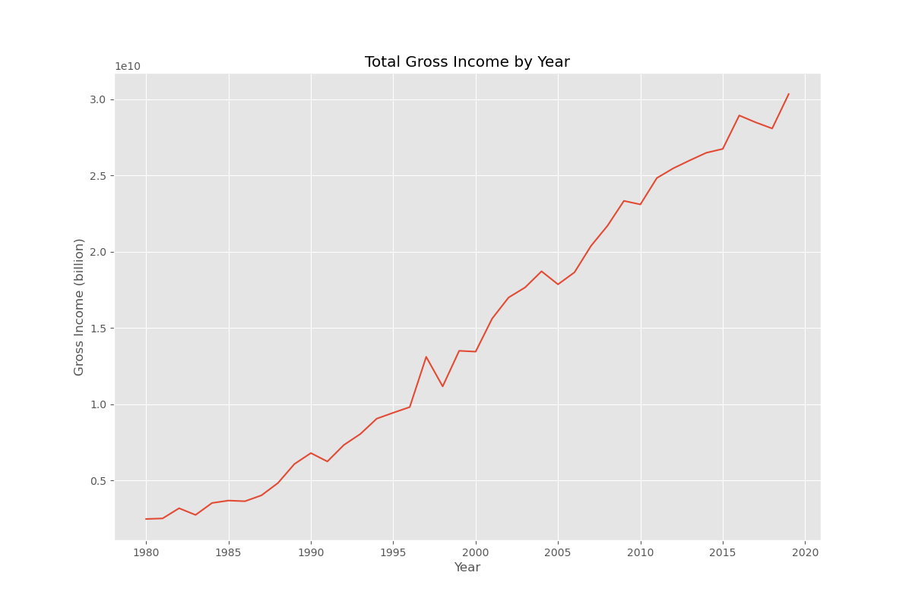
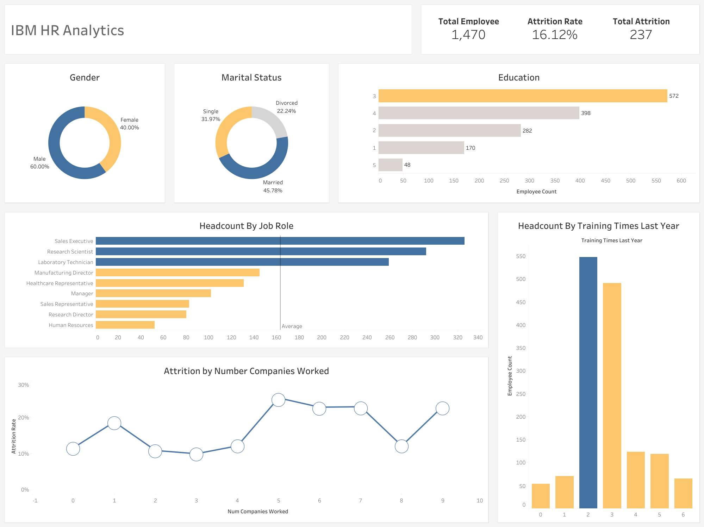
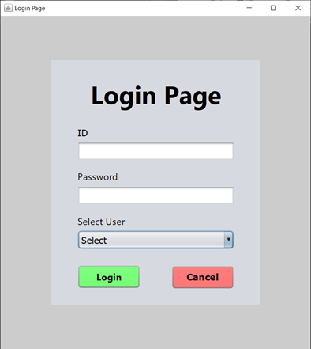
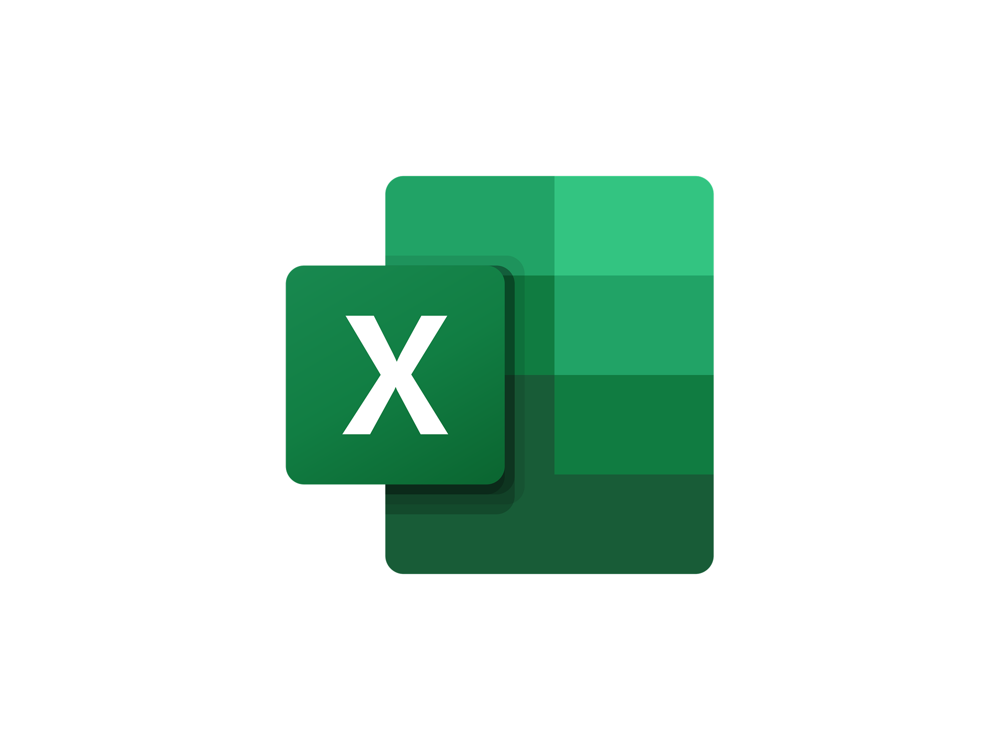
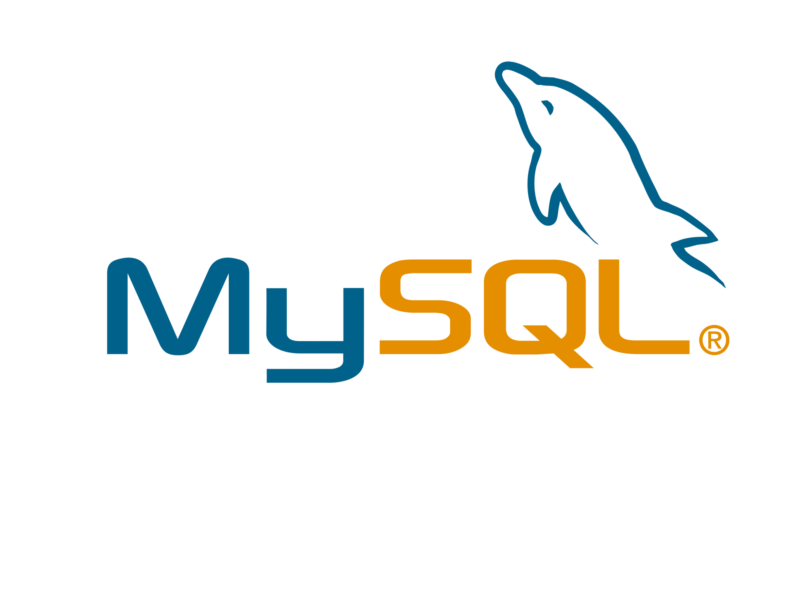

Utilized Python for end-to-end data analysis, including data cleaning, transformation,
visualization, and statistical interpretation. Leveraged libraries such as Pandas, NumPy,
Matplotlib, and Seaborn to extract meaningful insights from raw datasets.


Designed and published interactive dashboards using Tableau to visualize complex datasets in a clear and insightful way.

Developed a Java-based achievement management system for innovative students. Built using Java Swing for the GUI and MySQL for the backend
Developed a Java-based achievement management system for innovative students. Built using Java Swing for the GUI and MySQL for the backend

Developed a comprehensive Excel-based solution for data analysis and visualization. Utilized advanced Excel functions, pivot tables, and charts to present data insights effectively.

A widely-used relational database management system (RDBMS) that allows efficient storage, retrieval, and management of structured data.